Solvers are given starting values for A-J as well as 10 mini puzzles (see individual walkthroughs below). Entering the correct answer to each mini-puzzle unlocks an image of a mathematical iteration that assigns value to one variable. Each mini-puzzle also produces an extra letter.
| Order | Title | Answer | Extra letter |
|---|---|---|---|
| 1 | Playplace | DROPS THE BALL | O |
| 2 | Sunblock | BAHAMIAN | R |
| 3 | Mouse Taken | HELLO KITTY | D |
| 4 | To-Do | WINDOW PANE | E |
| 5 | Castle Crisis | GIORGIO’S ROCOCO GNOCCHI | R |
| 6 | The Cracked Crystal | GOOSEBUMP | B |
| 7 | The Pitch | A LARGE ROOM | Y |
| 8 | Off the Grid | FLYING | C |
| 9 | Historical Pictures | CHAMELEON | A |
| 10 | Unfinished Symphonies | MOTOR VEHICLE | R |
In the order the puzzles are initially listed, these extra letters spell out ORDER BY CAR. The face/number image, the puzzle title, and the flavor text all hint toward the cartoon Infinity Train; specifically, the show's first season, which is called The Perennial Child. Each episode of that season is entitled “The (Something) Car” (except the 10th episode, “The Engine.”) The 10 mini puzzles represent the 10 episodes in the show's first season (e.g., Sunblock has solvers name famous beaches, and “The Beach Car” is one of the episodes). As a solving aid, the puzzles are initially listed in alphabetical order by the episode titles they represent.
| Episode order | Episode title | Minipuzzle | Variable assigned |
|---|---|---|---|
| 1 | “The Grid Car” | Off the Grid | E |
| 2 | “The Beach Car” | Sunblock | D |
| 3 | “The Corgi Car” | Castle Crisis | H |
| 4 | “The Crystal Car” | The Cracked Crystal | G |
| 5 | “The Cat’s Car” | Mouse Taken | A |
| 6 | “The Unfinished Car” | Unfinished Symphonies | J |
| 7 | “The Chrome Car” | To-Do | I |
| 8 | “The Ball Pit Car” | Playplace | C |
| 9 | “The Past Car” | Historical Pictures | F |
| 10 | “The Engine | The Pitch | B |
Start each variable from A to J with its value in the initial image, under the faces (the specific faces are arbitrary; they’re just meant to clue Infinity Train).
Using the mathematical assignment statements associated with each puzzle in episode order, one at a time, assign new values to A-J, which are then used in subsequent operations.
| Expression | Notes | New Value | A1Z26 | |||||||||||||||
|---|---|---|---|---|---|---|---|---|---|---|---|---|---|---|---|---|---|---|
| 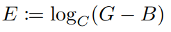 | (G-B) = (101-100) = 1, and the logarithm of 1 is always 0. | 0 | (space) | |||||||||||||||
| 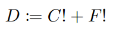 | 0!=1, so 3!+0!=7 | 7 | G | |||||||||||||||
| 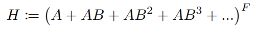 | F=0; anything to the 0 power = 1 | 1 | A | |||||||||||||||
| 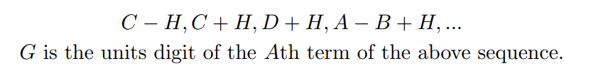 | If you plug the new values of H and D into this expression, it becomes 2, 4, 8, 16... So the sequence is “powers of 2”. The units digit rotates through 2, 4, 8, 6 over and over. The 115th term in that sequence will have a units digit of 8. | 8 | H | |||||||||||||||
| 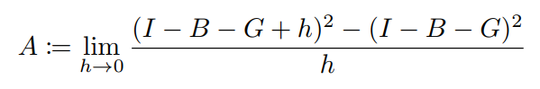 | This is the definition of the derivative of x^2 evaluated at 6. This means you plug 6 into 2x to get 12. | 12 | L | |||||||||||||||
| 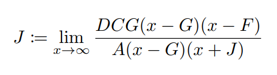 | This is a rational equation, with the same degree on the top and the bottom. Therefore, it has a horizontal asymptote equal to DCG/A, which is 14. | 14 | N | |||||||||||||||
| 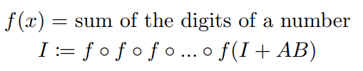 | I+AB is a multiple of 9. If you continuously add the digits of a multiple of 9 together, you will eventually get to 9. | 9 | I | |||||||||||||||
| 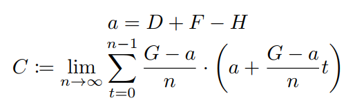 | This is defining an integral using an infinite Riemann sum. This is equivalent to the integral from 6 to 8 of xdx, which is 14. | 14 | N | |||||||||||||||
| 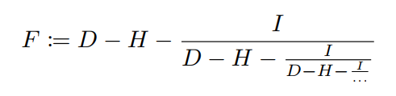 | D-H is 6, I is 9. Set the fraction equal to X. Replace the whole denominator of the fraction with X, to get X = 6-9/X. X solves to 3. | 3 | C | |||||||||||||||
| 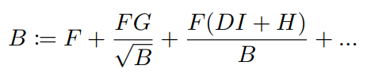 | This is an infinite geometric series. The initial term is 3, and the ratio is 4/5. Plugging this into the equation for the sum of an infinite geometric series, you get 15. | 15 | O | |||||||||||||||
| SSI | LES | NNO | NOR | IK | YR | RFL | |||||||
| CMI | CA | UN | EAM | OTS | TTE | ||||||||
| STI | LD | TOS | EA | HO | TAI | BU | |||||||
| IDI | IE | IDE | ONR | REO | DR | ||||||||
| SES | ANT | TTF | GR | NPZ | AGO | IRE | |||||||
| RCI | EXE | FOO | EA | THS | OFF | ||||||||
| Phrase | Letter |
|---|---|
| ANTI[BALL]ISTIC MISSILE | D |
| BUTTERFLY [BALL]OTS | R |
| CANNON[BALL] RUN | O |
| DRAGON[BALL] Z | P |
| EXERCISE [BALL] | S |
| FOOT[BALL] FIELD | T |
| GREAT[BALL]S OF FIRE | H |
| HOT AIR [BALL]OON RIDE | E |
| IKEA MEAT[BALL]S | O |
Reading the substituted letters in this order spells DROPS THE O, which becomes the puzzle answer DROPS THE BALL and a leftover O
First, identify the images pictured. Then, per the flavor text, take the SPF rating from each bottle and “block out” the first SPF% of each item's name. For example, blocking off the first 80% of BATTLESHIP yields IP, and blocking out the first 33% of SINEMA yields NEMA.
| [AL]PACA | [AMII]BO | [A]SHE | [BAN]ANA | [BATTLESH]IP | [CROIS]SANT |
| [FLAMEN]CO | [HAR]MONICA | [HEMING]WAY | [MARIM]BA | [PAY]PAL | [SCH]WA |
| [SHAM]ROCK | [SI]NEMA | [S]KI | [SPUTN]IK | [VIVAL]DI | [WOM]BAT |
The resulting strings can be combined to form the names of famous beaches, minus one letter. The locations of these beaches are the locations given at the bottom of the puzzle page.
| BRAZIL | (CO)(PACA)B(ANA) | B |
| BRAZIL | (IP)A(NEMA) | A |
| BARBADOS | (BAT)H(SHE)(BA) | H |
| NEW YORK | (ROCK)A(WAY) | A |
| FLORIDA | (PAL)M | M |
| HAWAII | (WA)(IK)I(KI) | I |
| CALIFORNIA | (SANT)A(MONICA) | A |
| AUSTRALIA | (BO)N(DI) | N |
Match up the beach names and read the missing letters in order to get the puzzle answer BAHAMIAN.
In addition, every bottle has a Morse code R as a design element, yielding an extra R.
“Mouse Taken” is an anagram of “Neko Atsume,” a game about collecting vicious predators. This is a puzzle about cats! Each image clues the name of one of the game’s collectible Regular Cats.
Each row or column of the grid also features an orange, white, gray, or black stripe. In each row of the grid, the colorations for two of the cats exactly match the stripe colors for their respective row and column. Indexing the leftmost matching cat in each row with the number to the left of the row and the rightmost cat with the number to the right of the row gives the answer going down the columns: HELLO KITTY.
| Orange | White | Gray | Black | Orange | |||
| Gray | 5 | RASCAL (scooter) | MARS[H]MALLOW | QUIC[K]SILVER | GINGER (Rogers) | SOCKS | 5 |
| Black | 6 | PUMPKIN | GABRI[E]L | PRINCESS (Aiko of Japan) | W[I]LLIE (Nelson) | MACCHIATO | 2 |
| White | 7 | GANACHE | SNOWBA[L]L | BOLT | SPO[T]S | SPUD | 4 |
| Orange | 4 | MELANGE (from Dune) | MAP[L]E | PEPPER | BANDI[T] | PICKLES | 6 |
| Gray | 5 | SMOKEY (Bear) | WILL[O]W | MIST[Y] (from Pokémon) | FRED (Armisen) | CHIP | 5 |
The correctly colored cats compose the critical character: D
Each icon in the browser’s open tabs belongs to a famous website. Each site can be matched up with one of the items in the to-do list such that it points to a different popular website that has similar properties (there may be many such websites but one is always significantly more popular – sorry, Yahoo! Mail fans). Those websites, in turn, have icons that prominently feature letters – some one letter, some two. Ordering those icons as their rivals are ordered in the browser tabs spells out the answer, WINDOW PANE:
| Current site | Find a new... | New site | Icon |
|---|---|---|---|
| Encyclopedia Britannica | …site for looking up information about anything. | Wikipedia | W |
| AngelList | …professional social network. | IN | |
| HBO Max | …streaming service with lots of comic book movies and classic cartoons. | Disney Plus | D |
| GMail | …online email client. | Outlook.com | O |
| The Boston Globe | …newspaper whose scandal investigation inspired a Best Picture nominee. | The Washington Post | WP |
| Vrbo | …site for vacation rentals. | Airbnb | A |
| Amazon (Prime Video) | …streaming service that will also send me DVDs in the mail. | Netflix | N |
| Shopify | …site for selling my homemade crafts. | Etsy | E |
The final line says to find a new browser from a massive tech company. The current browser is Chrome, as the icon in the top left shows. Its biggest rival that both matches the description and has a letter for its icon is Edge (formerly Explorer – “either old or new should work” because they lead to the same letter). That letter, the extracted letter for this puzzle, is E.
The word search contains the word CORGI like a million times. Find every instance of CORGI, and the unused letters spell out the caterer’s name (and the answer to the puzzle), GIORGIO’S ROCOCO GNOCCHI, plus RRRRR, to indicate the leftover R.
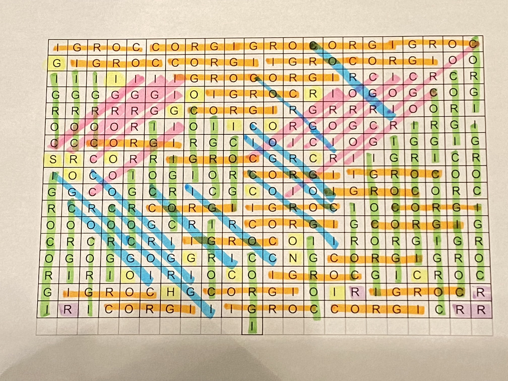Every line connects two words that form a two-word or compound phrase. Fill in these words. The arrows on the connecting line indicate which word comes first.
Certain word boxes connect to spaces in the corner boxes. Index into those words using the number below its corresponding space to get SILLY and CHASE on the top, and FIST and HEADS on the bottom. Do one more connection to get the puzzle answer GOOSEBUMP
The clues numbered 1-10 point toward specific two-word combinations in the diagram. Each clue contains either the word “First” or “After” to indicate whether to use the first or second word in the two-word combinations. Connecting these words gives the shape of the letter B.
CLEAN BREAK→CONTROL TOWER→CONTROL PANEL→DRUM BEAT→PLAY STATION→WATER TOWER→DRY ICE→STONE AGE→PARKING TICKET→PAGE BREAK
Click to expand. 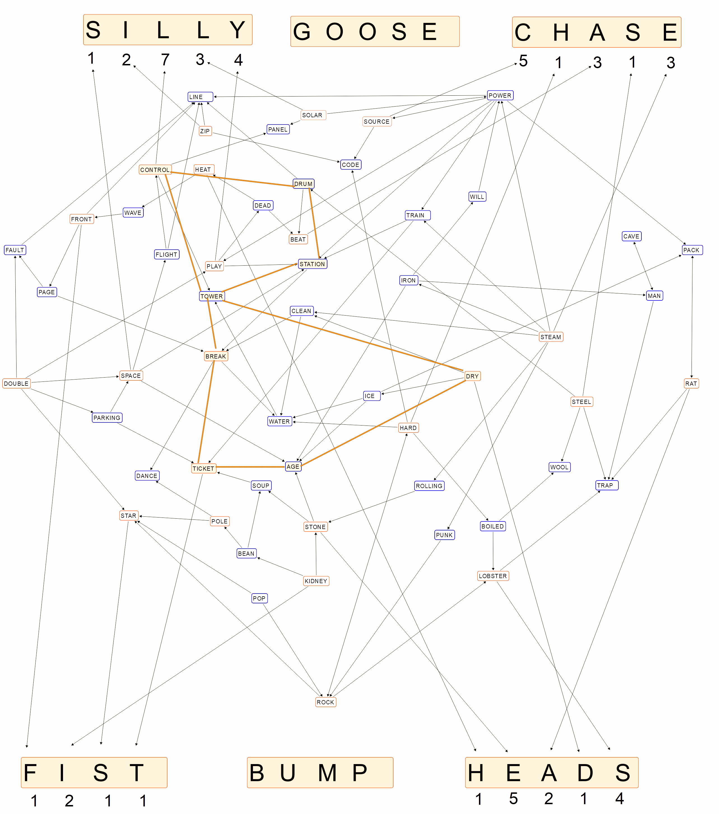The writer’s pitch contains 10 “car crashes,” which, in classic cryptic crossword style, refer to 10 anagrams of car makes. (As the movie is “a period piece,” all 10 are brands that are discontinued in the US). A red dot appears in the upper right corner of the screen every time one of the anagrams is spoken.
At the end of the pitch, the producer lists a string of numbers. Use those numbers to index into the unscrambled car makes to get the answer, A LARGE ROOM.
| Phrase from Pitch | Car | Index # | Letter |
|---|---|---|---|
| DARK CAP | PACKARD | 2 | A |
| LEEDS | EDSEL | 5 | L |
| BAAS | SAAB | 3 | A |
| ME CURRY | MERCURY | 3 | R |
| EGO | GEO | 1 | G |
| DUST E. BAKER | STUDEBAKER | 5 | E |
| OLEANDER | DELOREAN | 5 | R |
| HOT LUMPY | PLYMOUTH | 5 | O |
| CAPTION | PONTIAC | 2 | O |
| BLOOD SLIME | OLDSMOBILE | 5 | M |
The Producer’s Name, Y. Y. Wise, clues the leftover letter for this puzzle, Y.
Solve the Cryptic crossword:
| F | L | O | C | K | O | D | E |
| O | T | H | E | L | L | O | V |
| O | D | I | E | I | D | L | E |
| T | H | O | R | N | T | O | N |
| B | A | B | Y | G | I | R | L |
| A | L | I | T | O | M | O | O |
| L | E | T | O | N | E | R | G |
| L | A | S | T | N | A | M | E |
| L | R | M | A | N | S | O | N |
| O | P | A | L | I | N | N | E |
| A | R | R | I | V | E | D | R |
| T | O | T | T | E | R | E | D |
| H | E | Y | Y | A | C | C | S |
| Across | |||
|---|---|---|---|
| # | Clue | Answer | Wordplay |
| 1A | Gun manufacturer takes endless ride in traffic jam | (GRID)LOCK | Glock + ride - e |
| 6A | Verse in tribute to endless yodel | ODE | yodel without ends |
| 9A | Simple greeting after an extended period becomes a whole Shakespearean drama | OTHELLO | OT + Hello |
| 10A | Cartoon dog to diet after shedding | ODIE | to diet |
| 11A | An enigma after the opening of German place to make pancakes | (GRID)DLE | G + riddle |
| 12A | Wilder way to begin tailgate: one noisemaker, then a whole lot | THORNTON | t + horn + ton |
| 14A | Infant daughter ably brings a mess after tops of new shoes removed (2 wds.) | BABY GIRL | ably brings -ns |
| 17A | Former Senator Franken: O.J. Simpson trial judge may be Supreme Court justice | ALITO | Al + Ito |
| 19A | Barnyard discussion feeling unfinished | MOO | Mood - d |
| 21A | On reflection, Bono telepathically revealing hint (2 wds.) | LET ON | Bono telepathically |
| 23A | Emergency Room gains $1000 with a little work | ERG | ER + G |
| 24A | Ten lamas wandering around Smith or Brown, e.g. (2 wds.) | LAST NAME | ten lamas |
| 28A | I will leave fancy house to the lead singer of Garbage | MANSON | Mansion - I |
| 31A | Oprah’s magazine friend is a real gem | OPAL | O + pal |
| 32A | Actress Bergman is like all of this puzzle’s answers? | IN(GRID) | In grid |
| 33A | After losing front end, a car split apart, but got here | ARRIVED | Car - c + rived |
| 35A | Aquatic mammal in lecture series seemed unstable | TOTTERED | TED + otter |
| 36A | He introduces gym twice with a hit OutKast song (2 wds.) | HEY YA | He + Y + Y + a |
| 37A | Includes someone on an email... or, doubles up a letter of particular importance | CCS | C+C |
| Down | |||
|---|---|---|---|
| # | Clue | Answer | Wordplay |
| 1D | Soccer, “The Dance of a Dozen Inches?” | FOOTBALL | foot ball |
| 2D | Huge classic Ford initially loses tread density | LTD | Loses Tread Density |
| 3D | State of Hawaii surrounded by rings | OHIO | O + HI + O |
| 4D | Oral presentation of ocean results in average grade (a letter of particular importance) | CEE | Sea |
| 5D. | Hostile creature concealed by black lingonberries | KLINGON | Black lingonberries |
| 6D | Tom lied about, like, radio shows from the 40’s (hyph.) | OLD-TIME | Tom lied |
| 7D | O Lord! Tortuous agony! | DOLOR | O Lord |
| 8D | It’s not odd to skip the beginning of a Brad Pitt movie | EVEN | Seven - S |
| 13D | Witch gets rid of Hogwarts groundskeeper | HA(GRID) | Hag + rid |
| 15D | Part of alibi transcribed—it’s right from the horse’s mouth | BIT | alibi transcribed |
| 16D | Splash Mountain’s godlier twists (2 wds.) | LO(G RID)E | godlier |
| 18D | Little kid landed at center of crypt—this is everything. | TOTALITY | Tot + alit + y |
| 20D | Sabrina star is in for Monday | ORMOND | for Monday |
| 22D | “Reap chaos”—Old West lawman | EARP | reap |
| 25D | Advanced electrical system trims drag all over the place (2 wds.) | SMART (GRID) | trims drag |
| 26D | Elf actor nears New Order | ASNER | nears |
| 27D | Unwilling to inject oxygen into strip of wood | LOATH | O + Lath |
| 29D | Chop up a vine to make a kind of lotion | NIVEA | a vine |
| 30D | Straight-A student’s candy pebbles | NERDS | double meaning |
| 34D | Caviar restaurant offer excludes starters | ROE | Restaurant Offer Excludes |
Six of the answers contain the letter string GRID: GRIDLOCK, HAGRID, SMART GRID, GRIDDLE, INGRID and LOG RIDE.
When entered in the crossword grid, the GRID is dropped and replaced by a letter from the crossing word, resulting in (F)LOCK, HA(L), SMART(Y), (I)DLE, IN(N), and LO(G)E. The replacement letters, read left to right, spell FLYING, the puzzle’s answer.
In addition, two of the puzzle’s clues describe the letter C as “a letter of particular importance,” as it is the leftover letter for this puzzle.
Each of the images is taken from a previous Mystery Hunt, one from each year from 2012 to 2020. Order the images by year, and use the number of the image to index into the name of the round that the image is from, to get the answer CHAMELEON.
| [E]NDYMION (2016) | GAM[E]S ISLAND (2018) | THE RED [A]ND WHITE KNIGHTS (2014) |
| THE DISMA[L] DUNGEON (2017) | MARTY BIS[H]OP (2013) | ARBOR DAY T[O]WN (2019) |
| YESTERDAYLA[N]D (2020) | WORKSHOP META [M]ETA (2015) | INTO THE WOODSTO[C]K (2012) |
“The most important one was the chess one”... that would be the image from 2014, which gave us the A, which is our extra letter.
It’s a standard crossword. However, eight of the clue entries are unfinished song titles by the artists listed in the flavortext. In flavortext order:
| Artist | Grid Entry | Missing Letters |
|---|---|---|
| Bob Dylan | MAGGIE’S FAR | M |
| Lizzo | TEMP | O |
| Sade | SMOOTH OPERA | TOR |
| Jan and Dean | DEAD MAN’S CUR | VE |
| Band of Horses | SOLEMN OAT | H |
| Alanis Morrissette | IRON | IC |
| Old Crow Medicine Show | WAGON WHEE | L |
| Greta Van Fleet | YOU’RE THEON | E |
The missing letters spell puzzle answer MOTOR VEHICLE.
In addition, there are several colored squares in the grid. The squares are (more or less) in the shape of an R, and when the grid is filled, they all contain an R, so R is your leftover letter.
| 1T | 2H | 3R | 4U | 5N | 6A | 7S | 8T | 9D | 10O | 11E | 12S | 13I | 14R | 15O | 16N | |||
| 17K | E | E | P | 18O | C | T | O | 19A | R | E | A | 20D | O | N | E | |||
| 21T | L | D | R | 22S | R | A | S | 23T | E | L | L | 24A | L | E | X | |||
| 25S | M | O | O | 26T | H | O | P | E | 27R | A | 28A | 29R | R | E | S | T | ||
| 30A | V | O | N | L | E | A | 31A | 32I | M | E | E | |||||||
| 33T | 34H | 35I | R | D | E | Y | E | 36M | 37A | G | G | I | E | S | 38F | 39A | 40R | |
| 41H | U | D | 42I | S | M | 43T | O | X | I | N | 44K | A | R | M | A | |||
| 45A | L | I | 46E | N | 47V | I | S | I | T | O | 48R | 49Y | E | A | R | |||
| 50W | A | G | O | N | 51W | 52H | E | E | 53S | A | B | O | T | 55E | T | E | ||
| 56M | E | I | E | R | 57T | E | P | I | 58D | |||||||||
| 59O | 60A | 61R | 62R | I | O | T | 63S | 64S | O | L | E | M | N | 65O | 66A | 67T | ||
| 68K | N | E | 69W | 70G | R | I | E | 71V | E | R | 72A | S | P | C | A | |||
| 73A | N | N | A | 74L | 75S | C | R | E | W | 76S | 77E | L | 78A | M | P | |||
| 79Y | O | U | R | E | 80T | H | E | O | N | 81U | K | U | L | 82E | L | E | S | |
| 83M | I | R | E | S | 84U | 85M | P | I | R | E | D | |||||||
| 86L | 87E | 88B | E | A | U | 89D | E | A | D | M | A | N | S | C90 | 91U | 92R | ||
| 93O | P | E | D | 94A | 95R | 96M | Y | 97D | A | P | S | 98E | L | S | A | |||
| 99S | E | A | U | 100N | A | A | K | 101A | T | O | I | 102L | E | E | K | |||
| 103T | E | M | P | 104T | Y | P | E | 105M | E | N | S | 106S | O | R | E |